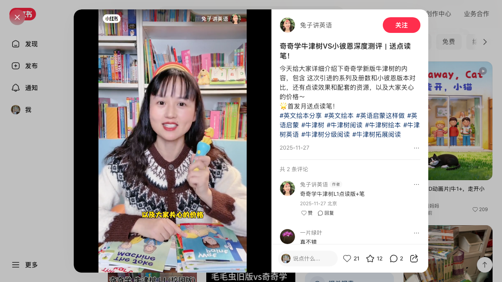
今天给大家详细介绍下奇奇学新版牛津树的内容，包含 这次引进的系列及册数和小彼恩版本对比，还有点读效果和配套的资源，以及大家关心的价格～ 🌟首发月送点读笔！ #英文绘本分享 #英文绘本 #英语启蒙这样做 #英语启蒙 #牛津树 #牛津树阅读 #牛津树绘本 #牛津树英语 #牛津树分级阅读 #牛津树拓展阅读
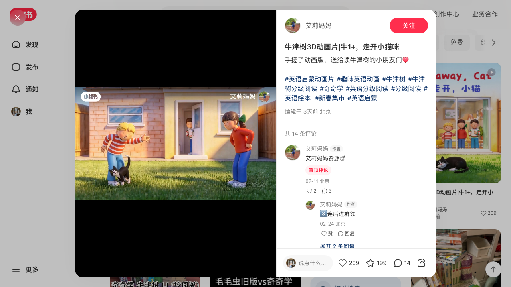
手搓了动画版，送给读牛津树的小朋友们 #英语启蒙动画片 #趣味英语动画 #牛津树 #牛津树分级阅读 #奇奇学 #英语分级阅读 #分级阅读 #英语绘本 #新春集市 #英语启蒙
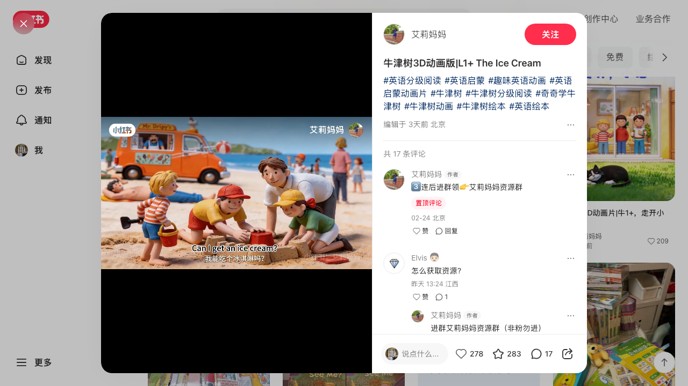
#英语分级阅读 #英语启蒙 #趣味英语动画 #英语启蒙动画片 #牛津树 #牛津树分级阅读 #奇奇学牛津树 #牛津树动画 #牛津树绘本 #英语绘本
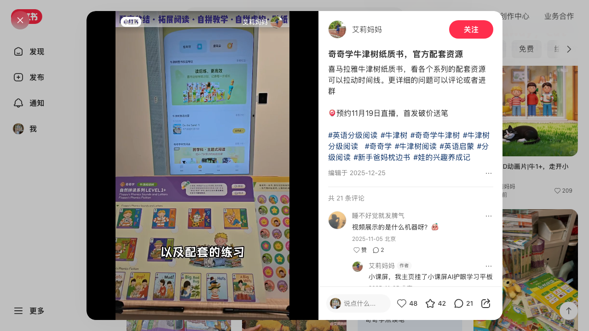
喜马拉雅牛津树纸质书，看各个系列的配套资源可以拉动时间线。更详细的问题可以评论或者进群 预约11月19日直播，首发破价送笔 #英语分级阅读 #牛津树 #奇奇学牛津树 #牛津树分级阅读 #奇奇学 #牛津树阅读 #英语启蒙 #分级阅读 #新手爸妈枕边书 #娃的兴趣养成记
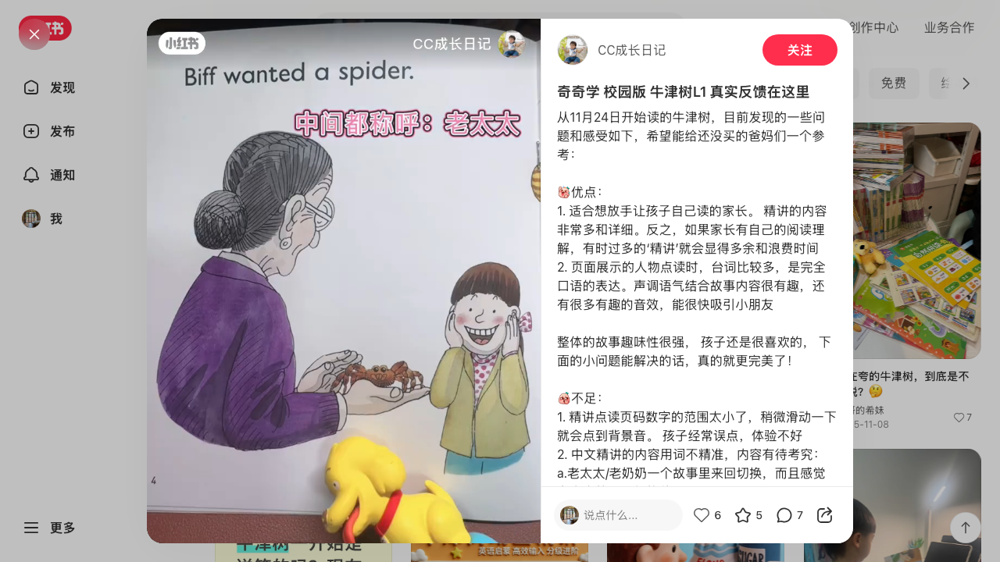
从11月24日开始读的牛津树，目前发现的一些问题和感受如下，希望能给还没买的爸妈们一个参考： 优点： 1. 适合想放手让孩子自己读的家长。 精讲的内容非常多和详细。反之，如果家长有自己的阅读理解，有时过多的‘精讲’就会显得多余和浪费时间 2. 页面展示的人物点读时，台词比较多，是完全口语的表达。声调语气结合故事内容很有趣，还有很多有趣的音效，能很快吸引小朋友 整体的故事趣味性很强， 孩子还是很喜欢的， 下面的小问题能解决的话，真的就更完美了！ 不足： 1. 精讲点读页码数字的范围太小了，稍微滑动一下就会点到背景音。 孩子经常误点，体验不好 2. 中文精讲的内容用词不精准，内容有待考究： a.老太太/老奶奶一个故事里来回切换，而且感觉老太太就不是很礼貌。 b.对于狗狗跑的姿势形容的一模一样的描述不准确，CC说：“妈妈他们不一样，尾巴不一样！” c.对于黑猫的颜色描述，CC说：她说错了，猫猫的爪子也是白色的。 d.对于爸爸公鸡装扮说成是母鸡装扮，这点我在Gemini特意查了一下，图画画的99% 是公鸡的特征（特别是长尾巴），精讲说母鸡就很离谱。 e. 页面内容和精讲内容的断句/...
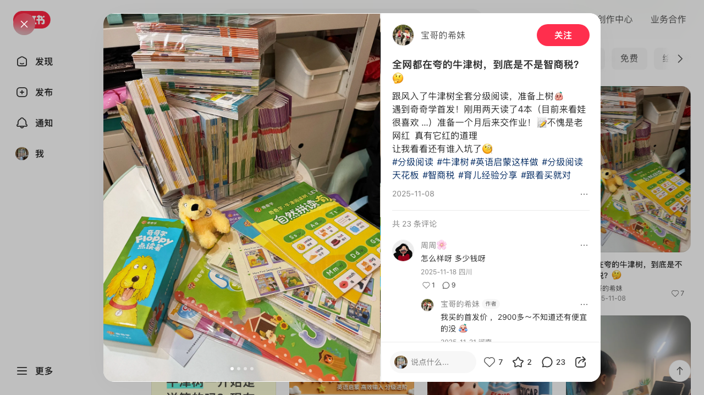
跟风入了牛津树全套分级阅读，准备上树 遇到奇奇学首发！刚用两天读了4本（目前来看娃很喜欢 …）准备一个月后来交作业！📝不愧是老网红 真有它红的道理 让我看看还有谁入坑了🧐 #分级阅读 #牛津树#英语启蒙这样做 #分级阅读天花板 #智商税 #育儿经验分享 #跟着买就对
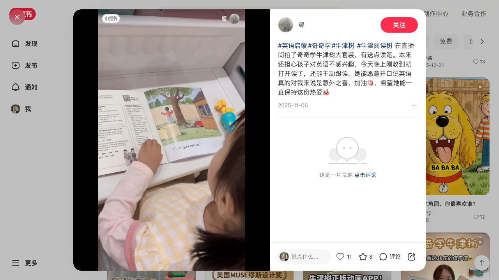
#英语启蒙#奇奇学#牛津树 #牛津阅读树 在直播间拍了奇奇学牛津树大套装，有送点读笔。本来还担心孩子对英语不感兴趣，今天晚上刚收到就打开读了，还能主动跟读，她能愿意开口说英语真的对我来说是意外之喜。加油，希望她能一直保持这份热爱
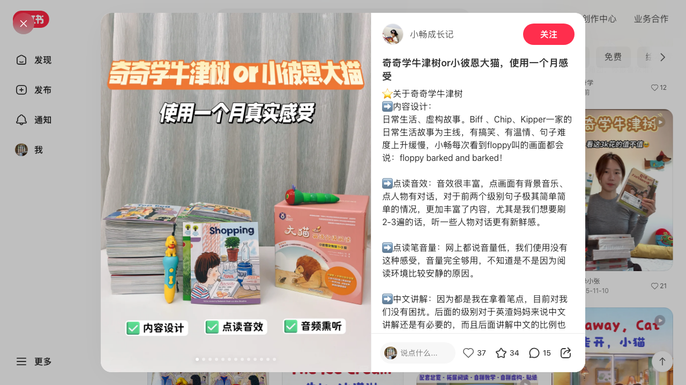
⭐️关于奇奇学牛津树 ➡️内容设计： 日常生活、虚构故事。Biff 、Chip、Kipper一家的日常生活故事为主线，有搞笑、有温情、句子难度上升缓慢，小畅每次看到floppy叫的画面都会说：floppy barked and barked！ ➡️点读音效：音效很丰富，点画面有背景音乐、点人物有对话，对于前两个级别句子极其简单简单的情况，更加丰富了内容，尤其是我们想要刷2-3遍的话，听一些人物对话更有新鲜感。 ➡️点读笔音量：网上都说音量低，我们使用没有这种感受，音量完全够用，不知道是不是因为阅读环境比较安静的原因。 ➡️中文讲解：因为都是我在拿着笔点，目前对我们没有困扰。后面的级别对于英渣妈妈来说中文讲解还是有必要的，而且后面讲解中文的比例也会逐渐减少，我觉得不会有影响。 ➡️音频熏听：在奇奇学官方APP上赠送了一年免费熏听。 ———————————— ⭐️关于小彼恩大猫 ➡️内容设计： 大猫的内容太爱了！画面美，文字也美。故事虚构与非虚构基本1:1，虚构类的故事涉及很多经典寓言，很多画面极具艺术感。非虚构的故事画风、语言设计巧妙，一点也不枯燥。 后面的story m...
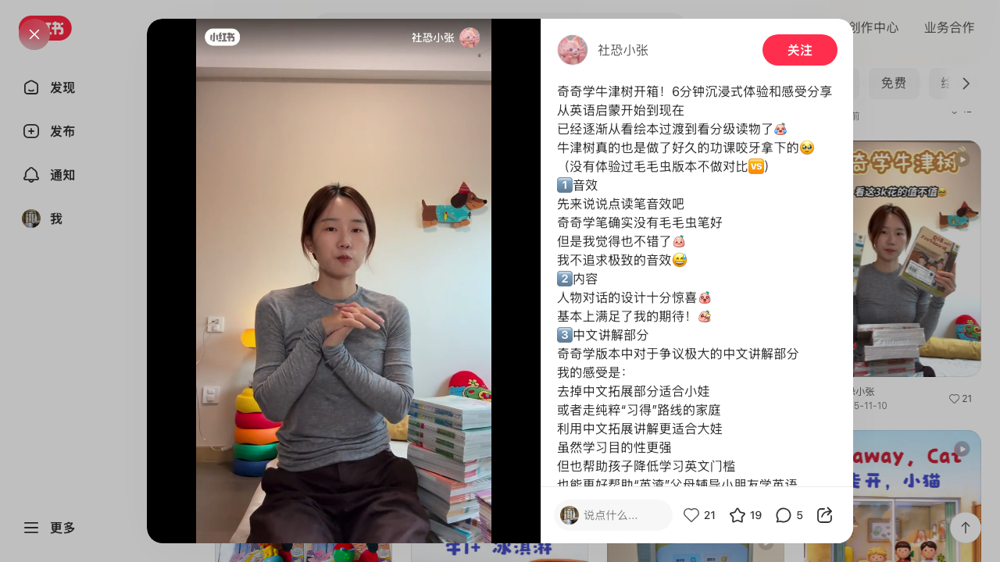
奇奇学牛津树开箱！6分钟沉浸式体验和感受分享 从英语启蒙开始到现在 已经逐渐从看绘本过渡到看分级读物了 牛津树真的也是做了好久的功课咬牙拿下的🥹 （没有体验过毛毛虫版本不做对比🆚） 1️⃣音效 先来说说点读笔音效吧 奇奇学笔确实没有毛毛虫笔好 但是我觉得也不错了 我不追求极致的音效😅 2️⃣内容 人物对话的设计十分惊喜 基本上满足了我的期待！ 3️⃣中文讲解部分 奇奇学版本中对于争议极大的中文讲解部分 我的感受是： 去掉中文拓展部分适合小娃 或者走纯粹“习得”路线的家庭 利用中文拓展讲解更适合大娃 虽然学习目的性更强 但也帮助孩子降低学习英文门槛 也能更好帮助“英渣”父母辅导小朋友学英语 反正就是家长看目的各取所需 🤔 如果后期我们更倾向于听中文讲解的话 我应该会毫不犹豫的替换成全英版 #生活需要分享欲 #英语启蒙#奇奇学 #牛津树 #牛津阅读树 #开箱测评 #2岁宝宝 #早教启蒙 #双语启蒙 #英语原版书
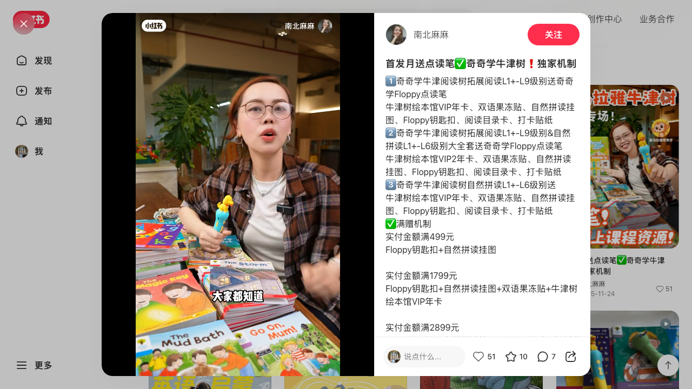
1️⃣奇奇学牛津阅读树拓展阅读L1+-L9级别送奇奇学Floppy点读笔 牛津树绘本馆VIP年卡、双语果冻贴、自然拼读挂图、Floppy钥匙扣、阅读目录卡、打卡贴纸 2️⃣奇奇学牛津阅读树拓展阅读L1+-L9级别&自然拼读L1+-L6级别大全套送奇奇学Floppy点读笔 牛津树绘本馆VIP2年卡、双语果冻贴、自然拼读挂图、Floppy钥匙扣、阅读目录卡、打卡贴纸 3️⃣奇奇学牛津阅读树自然拼读L1+-L6级别送 牛津树绘本馆VIP年卡、双语果冻贴、自然拼读挂图、Floppy钥匙扣、阅读目录卡、打卡贴纸 ✅满赠机制 实付金额满499元 Floppy钥匙扣+自然拼读挂图 实付金额满1799元 Floppy钥匙扣+自然拼读挂图+双语果冻贴+牛津树绘本馆VIP年卡 实付金额满2899元 Floppy钥匙扣+自然拼读挂图+双语果冻贴+牛津树绘本馆VIP年卡+奇奇学Floppy点读笔 实付金额满3699元 Floppy钥匙扣+自然拼读挂图+双语果冻贴+牛津树绘本馆VIP2年卡+奇奇学Floppy点读笔 #英语启蒙这样做 #牛津树 #喜马拉雅牛津树 #奇奇学 #奇奇学牛津树 #...
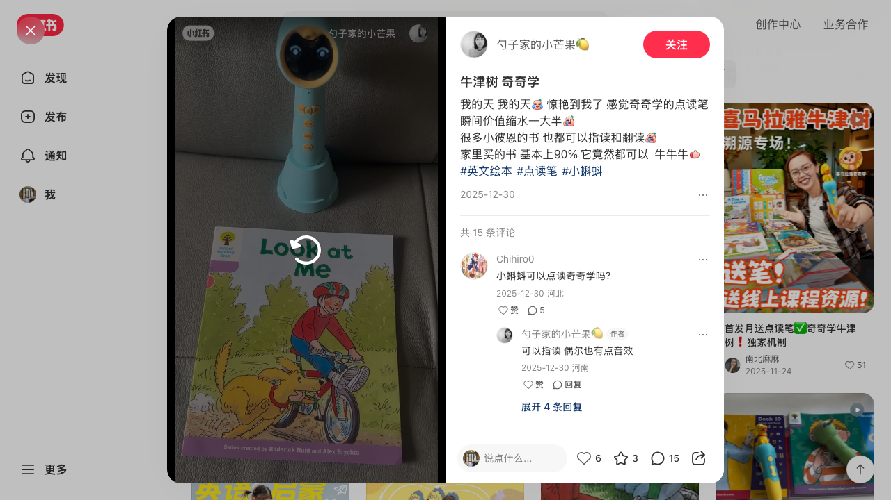
我的天 我的天 惊艳到我了 感觉奇奇学的点读笔瞬间价值缩水一大半 很多小彼恩的书 也都可以指读和翻读 家里买的书 基本上90% 它竟然都可以 牛牛牛 #英文绘本 #点读笔 #小蝌蚪
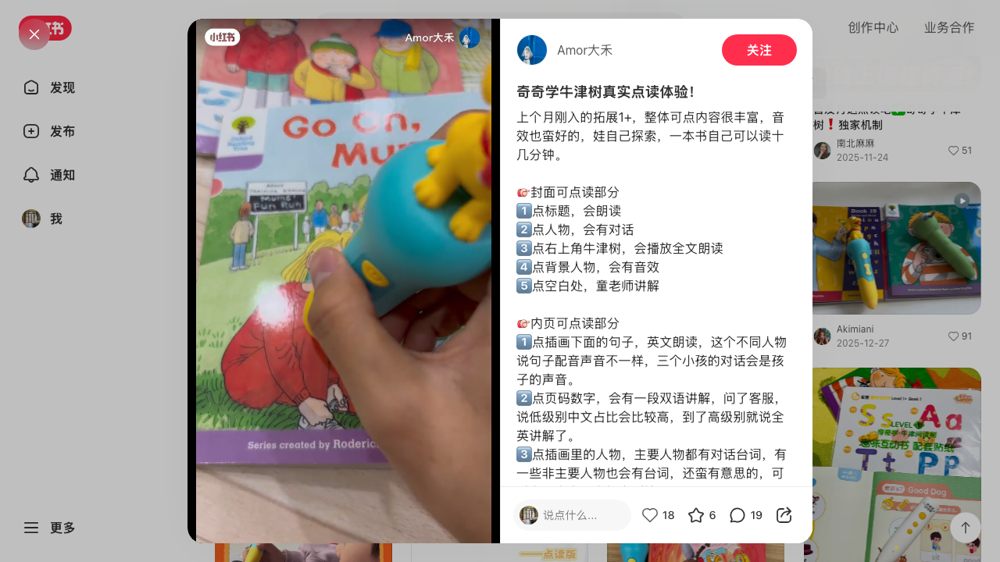
上个月刚入的拓展1+，整体可点内容很丰富，音效也蛮好的，娃自己探索，一本书自己可以读十几分钟。 封面可点读部分 1️⃣点标题，会朗读 2️⃣点人物，会有对话 3️⃣点右上角牛津树，会播放全文朗读 4️⃣点背景人物，会有音效 5️⃣点空白处，童老师讲解 内页可点读部分 1️⃣点插画下面的句子，英文朗读，这个不同人物说句子配音声音不一样，三个小孩的对话会是孩子的声音。 2️⃣点页码数字，会有一段双语讲解，问了客服，说低级别中文占比会比较高，到了高级别就说全英讲解了。 3️⃣点插画里的人物，主要人物都有对话台词，有一些非主要人物也会有台词，还蛮有意思的，可以自己去点一点探索剧情。 4️⃣点插画里的一些物品、人物动作，也会有一些音效。 这个效果我感觉还是蛮值得的 #牛津树 #分级阅读
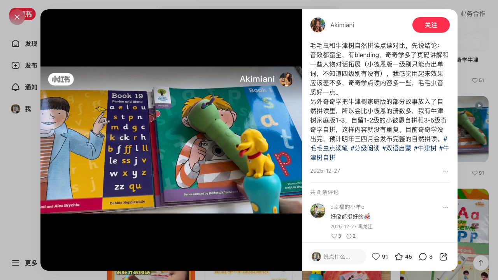
毛毛虫和牛津树自然拼读点读对比，先说结论： 音效都蛮全，有blending，奇奇学多了页码讲解和一些人物对话拓展（小彼恩版一级别只能点出单词，不知道四级别有没有），我感觉用起来效果应该差不多，奇奇学点读内容多一些，毛毛虫音质好一点。 另外奇奇学把牛津树家庭版的部分故事放入了自然拼读里，所以会比小彼恩的册数多，我有牛津树家庭版1-3，自留1-2级的小彼恩自拼和3-5级奇奇学自拼，这样内容就没有重复。目前奇奇学没出完，预计明年三四月会发布完整的自然拼读。#毛毛虫点读笔 #分级阅读 #双语启蒙 #牛津树 #牛津树自拼
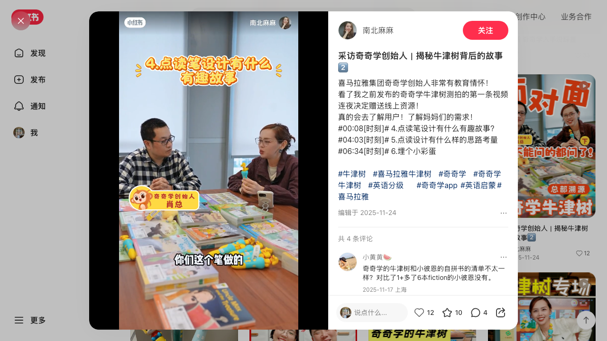
喜马拉雅集团奇奇学创始人非常有教育情怀！ 看了我之前发布的奇奇学牛津树测拍的第一条视频 连夜决定赠送线上资源！ 真的会去了解用户！了解妈妈们的需求！ #00:08[时刻]# 4.点读笔设计有什么有趣故事？ #04:03[时刻]# 5.点读设计有什么样的思路考量 #06:34[时刻]# 6.埋个小彩蛋 #牛津树 #喜马拉雅牛津树 #奇奇学 #奇奇学牛津树 #英语分级 #奇奇学app #英语启蒙#喜马拉雅
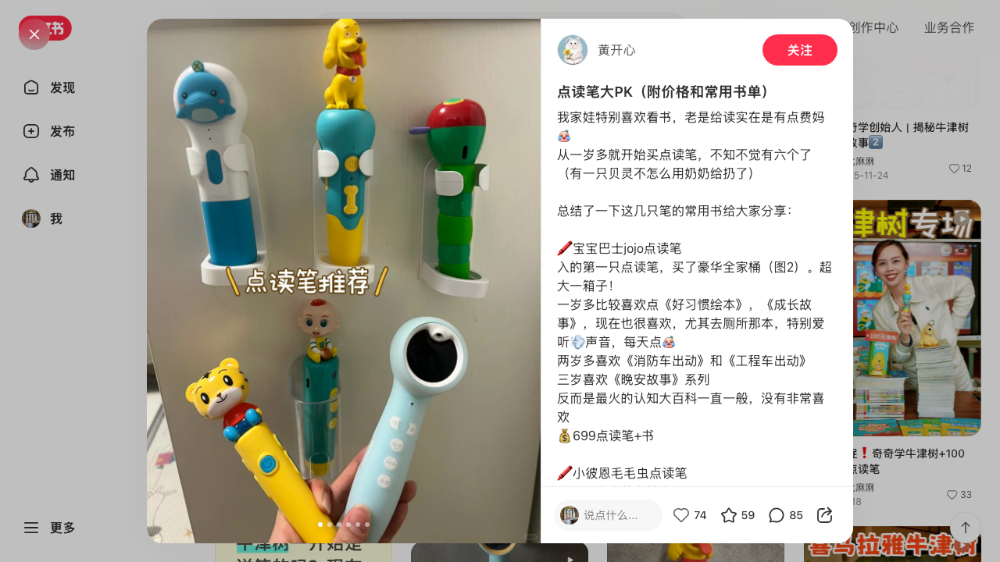
我家娃特别喜欢看书，老是给读实在是有点费妈 从一岁多就开始买点读笔，不知不觉有六个了（有一只贝灵不怎么用奶奶给扔了） 总结了一下这几只笔的常用书给大家分享： 🖍️宝宝巴士jojo点读笔 入的第一只点读笔，买了豪华全家桶（图2）。超大一箱子！ 一岁多比较喜欢点《好习惯绘本》，《成长故事》，现在也很喜欢，尤其去厕所那本，特别爱听💨声音，每天点 两岁多喜欢《消防车出动》和《工程车出动》 三岁喜欢《晚安故事》系列 反而是最火的认知大百科一直一般，没有非常喜欢 💰699点读笔+书 🖍️小彼恩毛毛虫点读笔 主要用来点英文绘本 《小鼠波波》《古力小超人》很喜欢，sss歌词本也喜欢，《little bean》喜欢听中文版 《彩虹兔》《Brown bear》《Dear zoo》不喜欢 💰点读笔378，书一般是🐟淘，小彼恩app会有一些活动，参加会送书 🖍️小蝌蚪点读笔 主要用来刷RAZ，还有一根毛系列，使用频率不高。 💰150 🖍️豚小蒙 主要点《big muzzy》大橙盒，《小鸡球球》，其他心喜悦的书 小鸡球球，豚小蒙，小猴皮皮能点的好像差不多，但是豚小蒙内存最大...
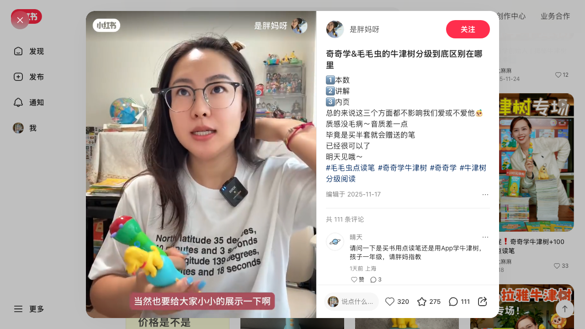
1️⃣本数 2️⃣讲解 3️⃣内页 总的来说这三个方面都不影响我们爱或不爱他 质感没毛病～音质差一点 毕竟是买半套就会赠送的笔 已经很可以了 明天见哦～ #毛毛虫点读笔 #奇奇学牛津树 #奇奇学 #牛津树分级阅读
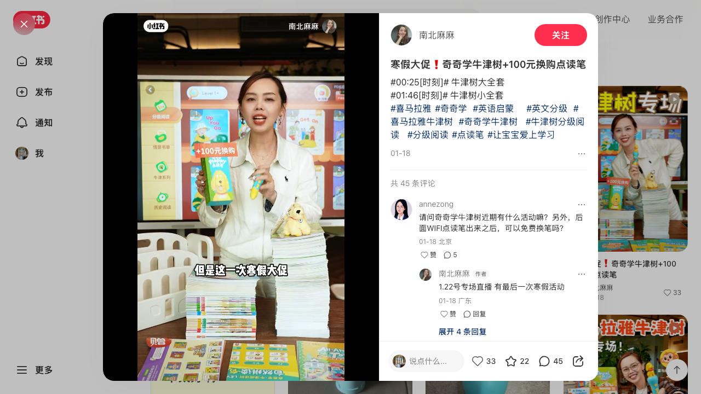
#00:25[时刻]# 牛津树大全套 #01:46[时刻]# 牛津树小全套 #喜马拉雅 #奇奇学 #英语启蒙 #英文分级 #喜马拉雅牛津树 #奇奇学牛津树 #牛津树分级阅读 #分级阅读 #点读笔 #让宝宝爱上学习
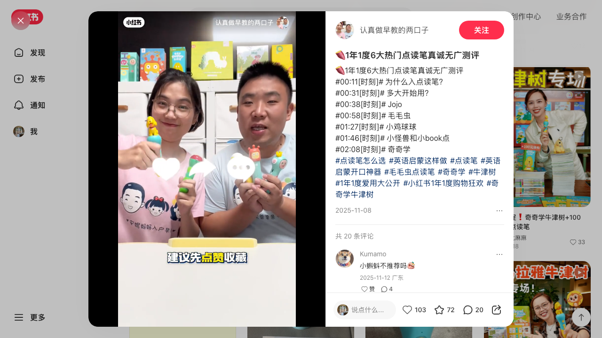
🍠1年1度6大热门点读笔真诚无广测评 #00:11[时刻]# 为什么入点读笔？ #00:31[时刻]# 多大开始用？ #00:38[时刻]# Jojo #00:58[时刻]# 毛毛虫 #01:27[时刻]# 小鸡球球 #01:46[时刻]# 小怪兽和小book点 #02:08[时刻]# 奇奇学 #点读笔怎么选 #英语启蒙这样做 #点读笔 #英语启蒙开口神器 #毛毛虫点读笔 #奇奇学 #牛津树 #1年1度爱用大公开 #小红书1年1度购物狂欢 #奇奇学牛津树
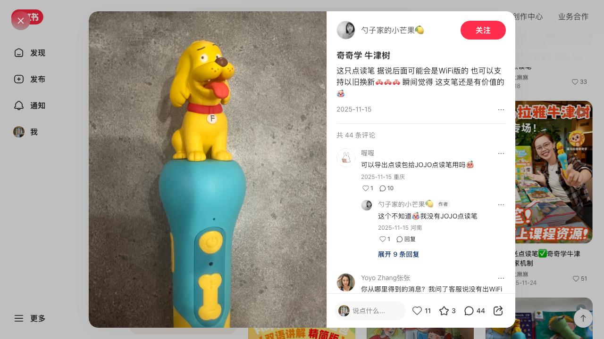
这只点读笔 据说后面可能会是WiFi版的 也可以支持以旧换新 瞬间觉得 这支笔还是有价值的
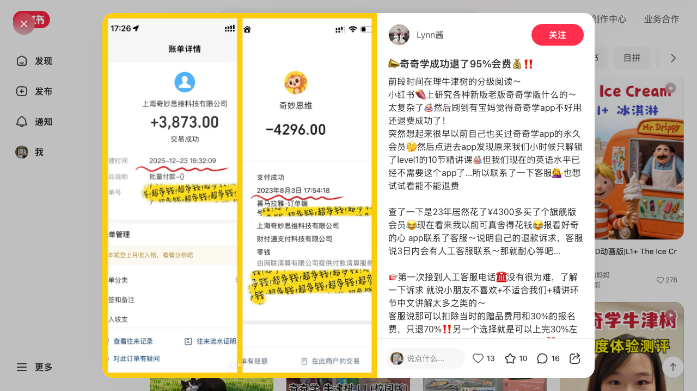
前段时间在理牛津树的分级阅读～ 小红书🍠上研究各种新版老版奇奇学版什么的～太复杂了然后刷到有宝妈觉得奇奇学app不好用 还退费成功了！ 突然想起来很早以前自己也买过奇奇学app的永久会员🤔然后点进去app发现原来我们小时候只解锁了level1的10节精讲课但我们现在的英语水平已经不需要这个app了…所以联系了一下客服💁♀️也想试试看能不能退费 查了一下是23年居然花了¥4300多买了个旗舰版会员😂现在看来我以前可真舍得花钱😂报着好奇的心 app联系了客服～说明自己的退款诉求，客服说3日内会有人工客服联系～那就耐心等吧… 第一次接到人工客服电话☎️没有很为难，了解一下诉求 就说小朋友不喜欢+不适合我们+精讲环节中文讲解太多之类的～ 客服说那可以扣除当时的赠品费用和30%的报名费，只退70%‼️另一个选择就是可以上完30%左右的课程内容（大概280课）再申请退费⁉️ 我觉得非常不合理‼️因为我们只上了10节课…可能比人家体验课的小孩上的课都少 居然要扣我30%的费用⁉️另外小朋友不喜欢 我怎么可能再上的了280课的学习内容？ 于是我又提出了我的诉求‼️“我只上了10课，...
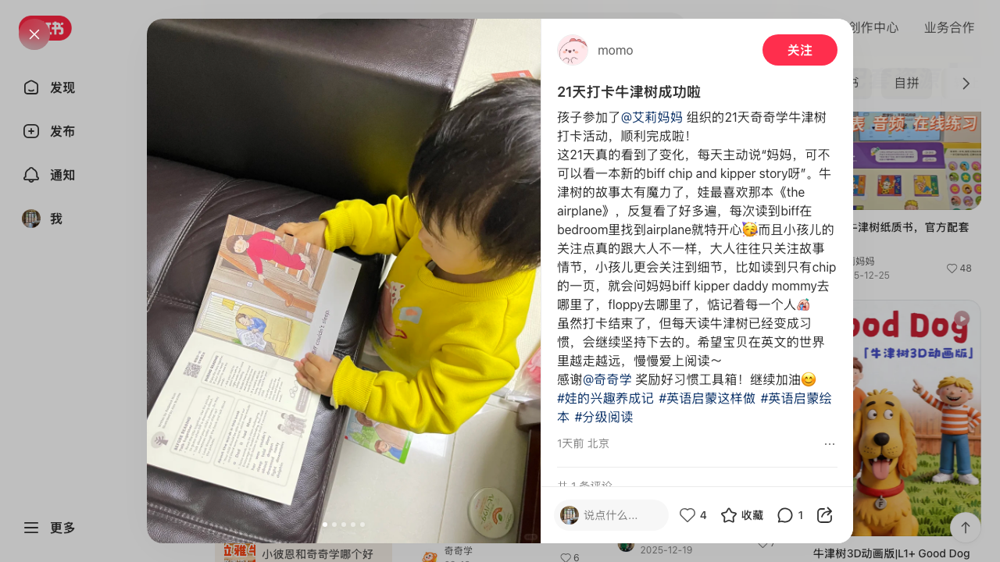
孩子参加了@艾莉妈妈 组织的21天奇奇学牛津树打卡活动，顺利完成啦！ 这21天真的看到了变化，每天主动说“妈妈，可不可以看一本新的biff chip and kipper story呀”。牛津树的故事太有魔力了，娃最喜欢那本《the airplane》，反复看了好多遍，每次读到biff在bedroom里找到airplane就特开心🥳而且小孩儿的关注点真的跟大人不一样，大人往往只关注故事情节，小孩儿更会关注到细节，比如读到只有chip的一页，就会问妈妈biff kipper daddy mommy去哪里了，floppy去哪里了，惦记着每一个人 虽然打卡结束了，但每天读牛津树已经变成习惯，会继续坚持下去的。希望宝贝在英文的世界里越走越远，慢慢爱上阅读～ 感谢@奇奇学 奖励好习惯工具箱！继续加油😊 #娃的兴趣养成记 #英语启蒙这样做 #英语启蒙绘本 #分级阅读
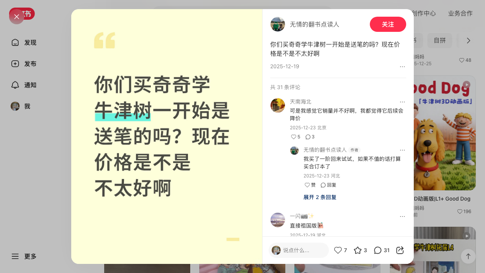
你们买奇奇学牛津树一开始是送笔的吗？现在价格是不是不太好啊
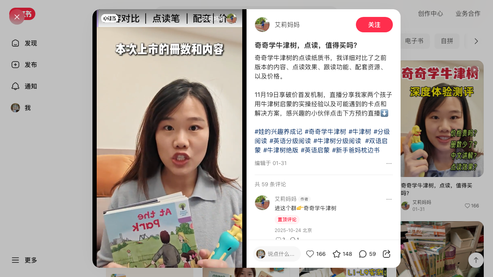
奇奇学牛津树的点读纸质书，我详细对比了之前版本的内容、点读效果、跟读功能、配套资源、以及价格。 11月19日享破价首发机制，直播分享我家两个孩子用牛津树启蒙的实操经验以及可能遇到的卡点和解决方案，感兴趣的小伙伴点击下方预约直播⬇️ #娃的兴趣养成记 #奇奇学牛津树 #牛津树 #分级阅读 #英语分级阅读 #牛津树分级阅读 #双语启蒙 #牛津树绝版 #英语启蒙 #新手爸妈枕边书
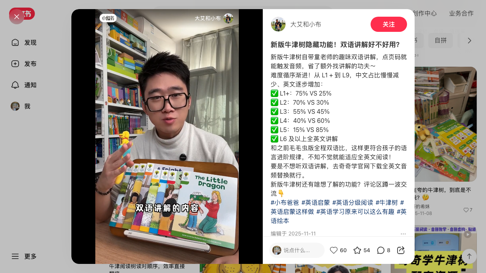
新版牛津树自带童老师的趣味双语讲解，点页码就能触发音频，省了额外找讲解的功夫～ 难度循序渐进！从 L1 + 到 L9，中文占比慢慢减少、英文逐步增加： ✅ L1+：75% VS 25% ✅ L2：70% VS 30% ✅ L3：55% VS 45% ✅ L4：40% VS 60% ✅ L5：15% VS 85% ✅ L6 及以上全英文讲解 和之前毛毛虫版全程双语比，这样更符合孩子的语言进阶规律，不知不觉就能适应全英文阅读！ 要是不想听双语讲解，去奇奇学官网下载全英文音频替换就行。 新版牛津树还有啥想了解的功能？评论区蹲一波交流👇 #小布爸爸 #英语启蒙 #英语分级阅读 #牛津树 #英语启蒙这样做 #英语学习原来可以这么有趣 #英语绘本